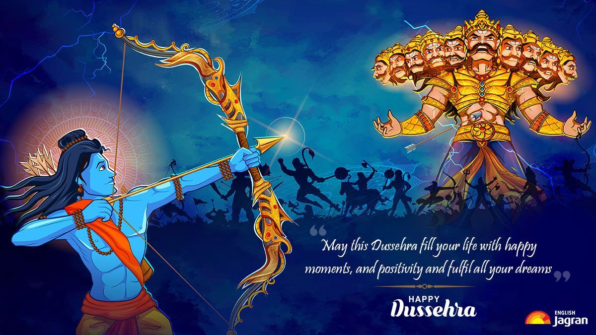

DUSSEHRA
Dussehra, also known as Vijayadashami, is a significant Hindu festival celebrated in India and other parts of South Asia. It falls on the tenth day of the Hindu lunar calendar month of Ashwin, typically in September or October. Dussehra holds great religious and cultural importance and marks the victory of good over evil.
The most prominent legend associated with Dussehra is the epic Ramayana, where Lord Rama, an avatar of Vishnu, defeats the demon king Ravana. Ravana had abducted Rama's wife, Sita, and the battle that ensued symbolizes the triumph of righteousness and virtue. The burning of effigies of Ravana, his brother Kumbhakarna, and son Meghanada (also known as Indrajit) on this day is a common ritual in many parts of India, signifying the victory of good over evil.
In the eastern part of India, particularly West Bengal, Dussehra is celebrated as Durga Puja, honoring the goddess Durga's victory over the demon Mahishasura. Elaborate and artistic idols of the goddess are created and worshipped with grand processions and cultural performances.

Dussehra also marks the end of the nine-day Navaratri festival, a period dedicated to the worship of the goddess Durga, as well as other forms of the divine. These nine days are often observed with fasting, dance (known as Garba or Dandiya), and prayer.
Apart from the religious significance, Dussehra is a time for people to come together with their communities and families. Festive markets, fairs, and processions are common during this time. It's an occasion for wearing new clothes, exchanging gifts, and indulging in special sweets and dishes.
In conclusion, Dussehra is a festival that symbolizes the eternal battle between good and evil, with the victory of virtue and righteousness prevailing. It brings people together to celebrate the triumph of good, foster community bonds, and partake in various cultural and religious traditions that vary across different regions of India.